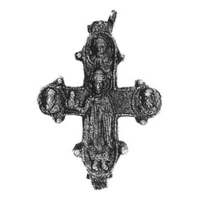
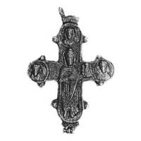

Catalog › CE-0880 · KOR2003-II.3.1.3
Encolpion întreg cu prinț cu model de biserică pe ambele valve, relief înalt cu prelucrare îngrijită
sec. prima jumătate XII (1101–1150) · Veliki Novgorod, Rusia · Muzeul-rezervație Unit de Stat din Novgorod (NGOMZ), Veliki Novgorod (fonduri)
double-sided reliquary cross (enkolpion), aramă; c. prima jumătate XII (1101–1150); found at Veliki Novgorod, Rusia; kept at Muzeul-rezervație Unit de Stat din Novgorod (NGOMZ), Veliki Novgorod (fonduri).




Identificare
- Categorie
- Encolpion bivalv (relicvar)
- Material
- Aramă
- Tehnică
- Turnare în relief
- Stare
- Întreagă
- Dimensiuni
- Î 58 × L 50 × Gr 5 mm
Iconografie
- Avers
- Sf. Boris și Gleb
- Descriere avers
- Valva de față cu imaginea prințului cu model de biserică în mâna dreaptă și trei imagini de piept ale sfinților în medalioane; balama de sus parțial pierdută. Reliefuri înalte, cu prelucrare îngrijită a veșmintelor și chipurilor. Inscripții nepăstrate.
- Revers
- Sf. Boris și Gleb
- Descriere revers
- Prinț cu model de biserică în mâna stângă și trei medalioane cu sfinți; balamaua din dreapta sus pierdută; două orificii trecătoare pe capătul de jos. Inscripție: litera Г trasată cu linii adâncite.
- Inscripții
- Г
- Limba
- Slavonă
Datare și atribuire
- Datare
- sec. prima jumătate XII (1101–1150)
- Centru
- Necunoscut
- Tipologie
- Korzukhina–Peskova 2003, tip II 3 1
Descoperire
- Localitate
- Veliki Novgorod
- Țară
- Rusia
- Context
- Așezare
- Anul
- 1993
Păstrare și referințe
- Colecție
- Muzeul-rezervație Unit de Stat din Novgorod (NGOMZ), Veliki Novgorod (fonduri)
- Bibliografie
- G. F. Korzukhina, A. A. Peskova, Древнерусские энколпионы. Нагрудные кресты-реликварии XI–XIII вв., Sankt-Petersburg, 2003 [Korzukhina–Peskova 2003], p. 88, cat. nr. II 3 1/3, reprodusă la Табл. 41 (planșe, p. 283).
- Figura
- Табл. 41
- Planșe
- Korzukhina–Peskova 2003, Табл. 41 (planșă fără paginație proprie în PDF; p. 283 tipărită)
- Observații
- Datare după Peskova: sec. prima jumătate XII. Circumstanțe: Săpături 1993, șantierul Fedorovski V, planul 16, careul 34, curățarea unei case din bușteni datate cca 1135. Foto: G. N. Kojina (NGOMZ). Coordonate: nu sunt date în sursă.
Citare: Corpus Encolpiorum, CE-0880, Encolpion întreg cu prinț cu model de biserică pe ambele valve, relief înalt cu prelucrare îngrijită, https://vitaliejosanu1979-ux.github.io/primul-meu-proiect/piese/KOR2003-II.3.1.3/ (accesat 2026-10-17).